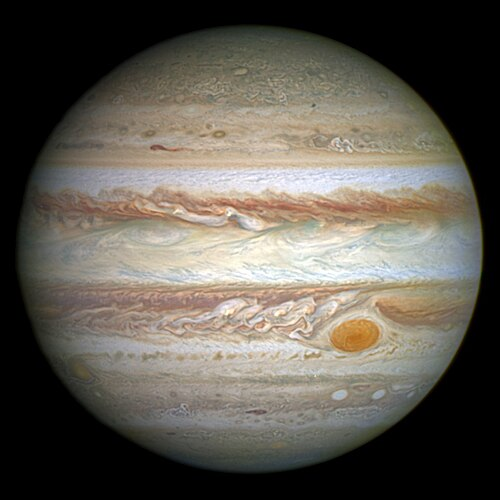

Jupiter
Jupiter is the fifth planet from the Sun and the largest in the solar system. It is a giant ball of gas with colorful storm bands.

Facts about Jupiter
- Diameter: about 139,820 km, more than 1,300 Earths could fit inside it
- Distance from the Sun: about 778 million km
- A day lasts just under 10 hours and a year lasts about 12 Earth years
- It has more than 90 moons
- The Great Red Spot is a storm larger than Earth that has lasted for centuries
- It is made mostly of hydrogen and helium and has no solid surface